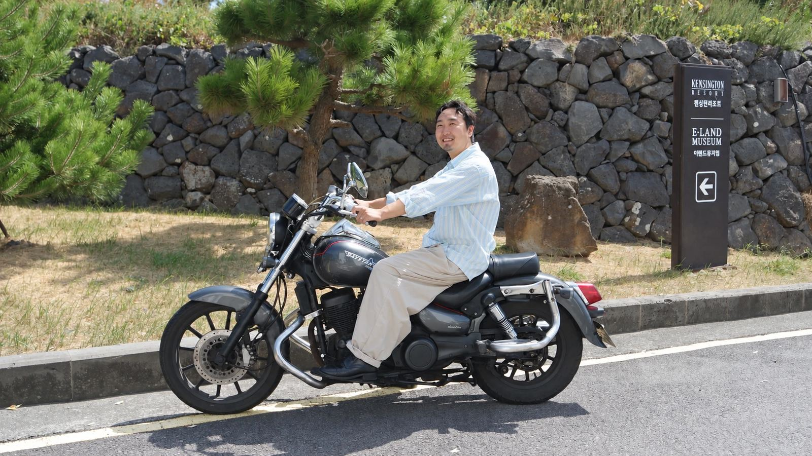
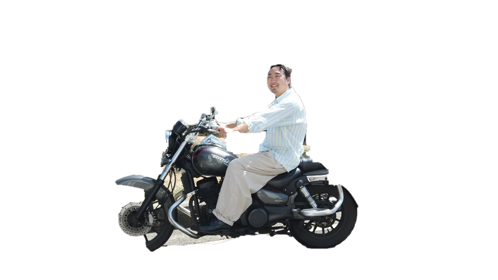

Settler Interview
Baengnok Marketing
Interview 01 / 04
Baengnok Marketing: Working and living at my own pace

I left the city's fierce marketing scene and headed for Jeju.
Now, riding the island wind, I fill my work and life at my own stride and pace.